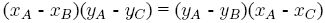
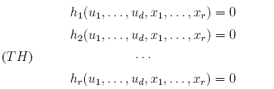
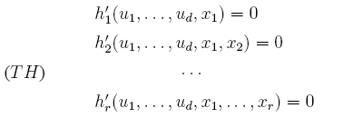
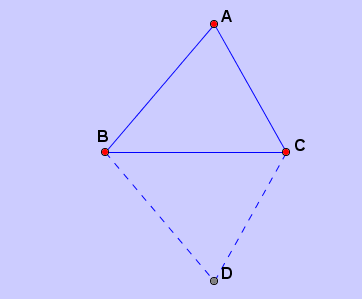
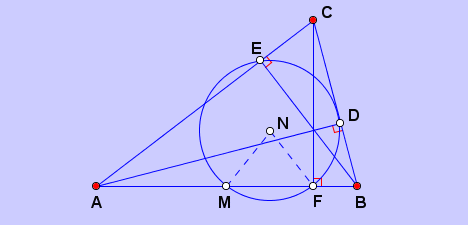

An Automated Geometry Theorem Prover
JGEX is an automated theorem prover. It implements the Full-Angle Method, the Deductive Database Method which can generate readable proofs. It also implements Wu's method and Groebner methods which isn't readable but much more powerful.
1. The Input Methods for Geometry Theorem Prover.
The input methods of JGEX are the further enhancement of the input methods used by GEX. It is similar to that used in the Geometers’ Sketchpad but emphasizes on its ease of use by the user. This method allows the user (not asked by the program) to use the mouse to choose points in the diagram pane to draw a geometry diagram. After the diagram is drawn, the text of the hypotheses is generated automatically in the text pane and it can be saved in plain-text as in the text-based format or saved in JGEX own format with a file with the “.gex” as the extension. Then the user can try to prove an assertion on the diagram.
In addition to dynamic geometry nature, JGEX provides other features to speedup or to facilitate
the drawing process for users. For example, if a square is wanted, the user needs only to choose
the command for drawing square, then click any two points (free points, semi-free points, or two
already constructed points) or an existing segment to drag to have a square. This process can be
cascaded so the it is effortless to draw three congruent squares in a row and to specify the following
problem that ∠BDA + ∠BFA + ∠BHA = 90◦.
|

In Figure 1, the only additional adjustment or modification we did manually is to move label B to left so that it does not overlap with three lines. The whole process took us about 30 seconds. The angle marks are easy to use. The user only needs to click the two sides of the angle, then the default style is shown with angle measures in degrees. We can change the default style to many other styles; see, e.g., Figure 7. This is another notoriously hard problem with triangle congruence only.
If a perpendicular line through a point, a new or an existing point, to an existing line with the foot
on the line is needed, the user only needs to click the point and drag a segment from it to touch the
existing line, then the foot point with a right angle mark used in the common textbooks are created.
2.2 Geometric and Non-Geometric Drawing
The most distinctive feature of the drawing part of JGEX is that the diagram generated by it is
geometric. At the right beginning of developing the drawing part of JGEX, we have kept the
proving and reasoning as our final goal since we treat geometric elements, such as points, lines,
and circles symbolically. Then we can apply the reasoning methods developed for over a quarter
of a century to proving and/or discovering properties of a geometric diagram constructed. We call
this kind of drawing Geometric Drawing.
For a diagram generated by JGEX, we keep a set of algebraic equations of the geometry constraints, so that we can prove or disprove properties of it with our algebraic methods efficiently. Especially, with Geometric Drawing, all nondegenerate conditions can be generated automatically.
2.2.1 Use of Algebraic Equations
A geometrical constraint in the hypotheses can be represent as one or two polynomial equalities on
the coordinates of points. For example, for predicate that A, B, C are collinear, the corresponding
polynomial equation is: . In this way, the hypotheses can
be expressed as a set of polynomial equations:

The next step is to triangulate 3 the polynomial set so that each polynomial introduces only one
new (dependent) variable xi. Thus the polynomial set is transformed to triangular form:

The variables u1, . . . , ud can be arbitrarily chosen and once they are fixed, the variables x1, . . . , xr can be successively solved. When one or two of variables u1, . . . , ud are changed with the mouse,
then the variables of x1, . . . , xr are updated to achieve the dynamic geometry effects.
One of advantages of this approach to drawing is that the reasoning with algebraic methods can
be immediately applied to the diagram. Currently, we have implemented Wu’s method in JGEX
and the Gr¨obner basis methods for various formulations (see [4]) are under implementing. Many
important and subtle geometry issues are closed related to Wu’s method which are impossible to
discuss without the underlying theory of Wu’s method.
Another important advantage of use of polynomials is that we can construct all diagrams or cases
with the leading degree in xj ≤ 4, since JGEX implements the formulas for quadratic, cubic, and
quartic equations.
2.2.2 Elimination of Duplicated Points
As a direct application of the JGEX algebraic proof engine, we can eliminate a newly constructed
point if it is identical to one of the previously constructed points. The three commercial systems
can only eliminate this point numerically. Since drawing a geometry diagram is so easy with a few
mouse clicks, we repeatedly observed this phenomenon at the early stage of developing JGEX.
Example. Let ABC be an isosceles triangle with AB = AC. Reflecting AB with respect to (wrpt) BC, we get segment BA'; then reflecting AC wrpt BC, we get segment CA''. Points A' and A'' are actually identical.
|  |
This is a simple example, but we have also encountered cases in
which the identity itself is a relatively deep theorem. Here is our
approach. Whenever a new point is constructed, we first check
whether this point is identical to a previous one numerically. If
so, we use Wu’s method to check the identity. If the identity is
valid, we eliminate this point. Without the powerful algebraic
proof engine, it could eliminate the redundant points with only approximate
numerical computations. But approximate
numerical computations does not prove points A and
X to be identical.
2.2.3 Automated Generation of Nondegenerate conditions
A geometry theorem is true generally under some additional conditions called nondegenerate
conditions. The identification of nondegenerate conditions is subtle.
Figure 2: One Form of the Nine-Point Circle Theorem
Example 1. (One form of the nine-point circle theorem) Let points D, E and F be the three feet
of the altitudes of triangle ABC. Let N be such that NF = NE and NF = ND, and M be the
midpoint of AB. Then NM = NF.

For this example, beside the condition that A, B and C are not collinear, we need at least the
nondegenerate condition that triangle ABC is not a right triangle, a subtle condition which is
not easy to detect. However, with geometric drawing and the reasoning ability of JGEX, we can
generate the nondegenerate conditions for a class of geometry statements of the constructive type.
The existence of point N implies the nondegenerate condition that points D, E, F are not collinear.
Since points D, E, F are fixed points, we need to generate nondegenerate conditions that only
contains free points. This is not an easy work, however, we can generate the polynomial equations
for this nondegenerate condition and check if the hypotheses are consistent or not with Wu’s method.
This is very useful for a theorem to be complete. For most of the theorems we encountered, the
nondegenerate conditions with geometric meanings can be generated automatically and thus we
can give a complete description of the geometry statements.
JGEX Help